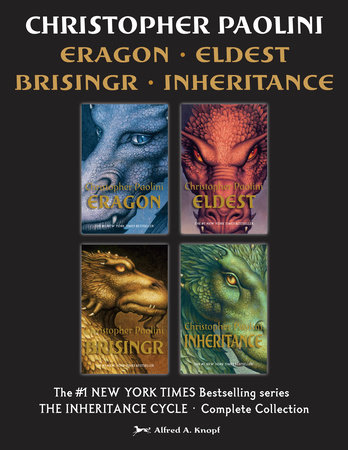

Success of the Series
Since its originial publication in 1954 The Lord of the Rings has been deemed as many as the "Book of the millenium". The Fellowship of the Ring has sold alone at least 150 million copies since its publication, and the series has inspired many novels, songs, and films.
Such novels that utilize similar characters and concepts as Tolkien;s work include:

- Christopher Paolini's Inheritance series that includes; elves, dwarves, magicians, dragons and a dark sorcerer
- J.K. Rowling's Harry Potter series that features powerful magical items that host the soul of the antagonist
- Stephen King's Dark Tower series has similar location names and a unique language
- George R. R. Martin's A Song of Ice and Fire series that follows a similar plot; such as the final battle at Winterfell and the siege of King's Landing at the end of the series can be compared to the siege of Helm's Deep and Minas Tirith respectively.
Elsewhere, the trilogy has been the influnce of several Heavy Metal bands who took labelled themselves after words, books or places in the series, and notably Led Zeppelin has realeased songs insipred by the LOTR including; Misty Mountain Hop, The Battle of Evermore, Ramble On, and most famously, Stairway to Heaven.

Finally, the most notable influence is the film adaptation of the series by Peter Jackson in the early 2000's. The Fellowship of the ring won three Academy awards, it grossed at $871,530,324, scored 91% on Rotten Tomatoes, and Ian Mckellen won the Academy Award for Best Supporting Actor. Second, The Two Towers grossed at $926,047,111, won two Acedemy Awards, and was rated 96% on Rotten Tomatoes. Lastly, The Return of the King won a record-tying eleven Academy Awards, it grossed at $1,119,929,521, and recevied a 95% on Rotten Tomatoes